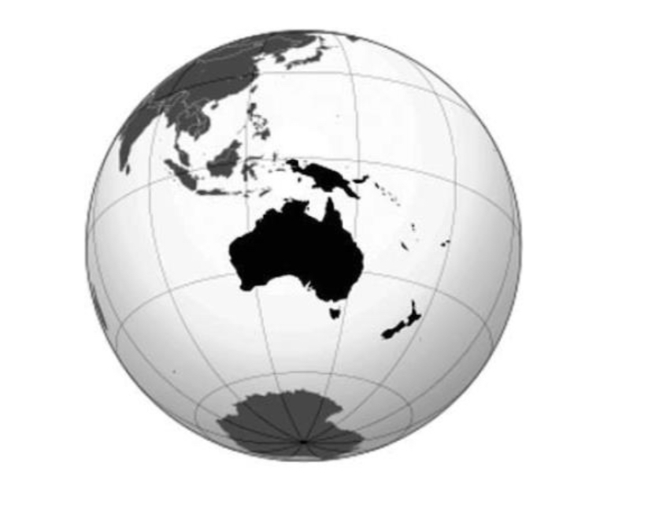
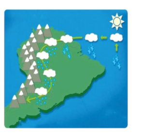

Quiz de Climatologia
1. As zonas costeiras do continente em destaque são afetadas diretamente pela condição natural denominada:

Biodiversidade
Continentalidade
Maritimidade
Efeito de Altitude
Efeito Estufa
2. Em relação às camadas/esferas do planeta Terra, assinale a alternativa CORRETA:
I. A Litosfera é a camada mais superficial da Terra, sendo formada por rochas e minerais.
II. A Atmosfera consiste na esfera gasosa que envolve a Terra.
III. A Hidrosfera compreende exclusivamente as águas dos rios e dos lagos, não abrangendo as águas oceânicas e as pluviais pela sua composição química específica.
As afirmativas I, II e III estão corretas
Apenas as afirmativas I e II estão corretas
Apenas as afirmativas I e III estão corretas
Apenas as afirmativas II e III estão corretas
3. Uma das camadas atmosféricas vai até cerca de 500 Km de altitude e é importante para as comunicações por conter grande quantidade de gases ionizados.
A camada atmosférica a que o trecho faz referência é:
Exosfera
Troposfera
Mesosfera
Termosfera
Estratosfera
4. A imagem abaixo retrata um fenômeno conhecido por meteorologistas desde a década de 1960, mas somente há uns 10 anos que os pesquisadores começaram a entender melhor a origem e a dinâmica do fenômeno.

Assinale a alternativa CORRETA sobre o que foi dito:
As nuvens, na ilustração, representam a atuação da MEC – Massa Equatorial Continental, que atua, principalmente, no verão e contribui na formação das chuvas de convecção, na porção oeste do território brasileiro.
As setas indicam o caminho percorrido pelos Ventos Alísios, responsáveis pela formação da ZCIT – Zona de Convergência Intertropical, área caracterizada por instabilidades climáticas que abrange a porção oeste do Brasil até o norte da Argentina.
A imagem apresenta duas situações, a formação da MEA – Massa Equatorial Atlântica, fortalecida pelo movimento dos Ventos Alísios, atuando ao longo da Cordilheira dos Andes; e as chuvas orográficas, que ocorrem na base da mesma cordilheira.
Na imagem temos a representação esquemática dos Rios Voadores ou Rios Flutuantes, que na verdade são jatos úmidos de baixos níveis que, ao encontrar a Cordilheira dos Andes, desviam para o sul e aumentam a pluviosidade por onde passam.
5. Utilizado pela primeira vez por José A. Marengo, cientista do Instituto Nacional de Pesquisas Espaciais (INPE), o termo “Rios Voadores” é dado às correntes de ar de baixa altitude que sopram entre um e três quilômetros de altura, transportando umidade, gerada da região amazônica, para praticamente todo o Brasil. Este termo se refere aos ventos úmidos que circulam a leste dos Andes da Amazônia até o norte da Argentina.
Sobre o fenômeno “Rios Voadores”, e considerando a dinâmica das massas de ar que atuam no Brasil, pode-se afirmar que:
I. O aquecimento da água do mar cria uma corrente de ar conhecida como
ventos alíseos que sopram do mar para o continente praticamente o ano todo.
II. Seguindo em direção aos Andes, a corrente de ar encontra a cordilheira e
não consegue atravessá-la. O fluxo é então refletido para o Sul.
III. Grande parte das chuvas do Centro-Oeste, do litoral do Nordeste e litoral do
Sudeste é consequência deste fenômeno.
IV. A imensa cobertura vegetal da floresta pode causar redução da evaporação,
ocasionando a alteração na atração aos ventos alíseos.
Assinale a alternativa correta:
I e II estão corretas
II e III estão corretas
I e IV estão corretas
III e IV estão corretas
I, II e IV estão corretas
6. Analise as afirmativas a seguir em relação aos fatores climáticos:
I. A latitude é um dos principais fatores climáticos, e é responsável pela divisão das zonas climáticas: tropical, temperada e polar.
II. O relevo também é considerado um fator climático, uma vez que influencia na temperatura e na umidade ao facilitar ou dificultar a circulação das massas de ar.
III. A continentalidade e a maritimidade exercem forte influência não só na umidade relativa do ar, mas também sobre a temperatura. Em áreas que sofrem influência da continentalidade (localização no interior do continente, distante do oceano), há maior variação de temperatura ao longo do dia ou mesmo das estações.
IV. Os maremotos são uma série de ondas gigantes causadas pelo deslocamento de grande volume de água no oceano Índico.
Com base nas afirmativas, assinale a alternativa CORRETA.
Todas as afirmativas estão corretas
Apenas as afirmativas II e III estão corretas
Apenas as afirmativas I, II e III estão corretas
Apenas as afirmativas I, III e IV estão corretas
7. Em relação aos fatores climáticos atuantes no Brasil, são feitas as seguintes afirmações.
I. A baixa altitude do território resulta em temperaturas elevadas em grande parte do país.
II. A variação latitudinal pouco influencia a dinâmica climática brasileira.
III. A maritimidade torna as temperaturas mais estáveis nas localidades litorâneas.
IV. A continentalidade provoca maiores variações de temperatura em localidades do interior.
V. As correntes marítimas quentes pouco contribuem para a existência das elevadas temperaturas do país.
Estão CORRETAS apenas as afirmações
III e V estão corretas
I e II estão corretas
I, III e IV estão corretas
II, IV e V estão corretas
Todas estão corretas
Enviar Respostas